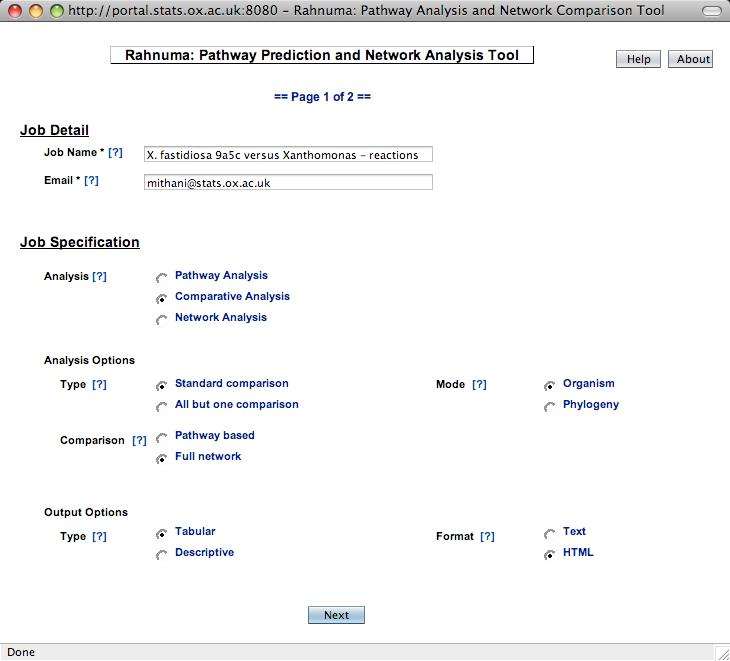
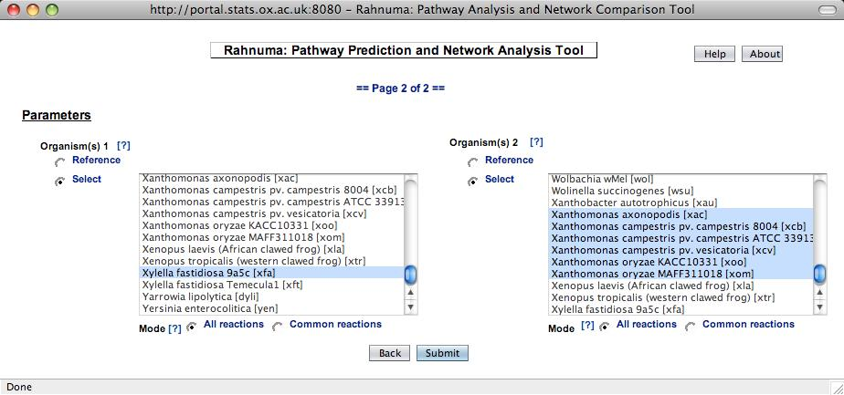
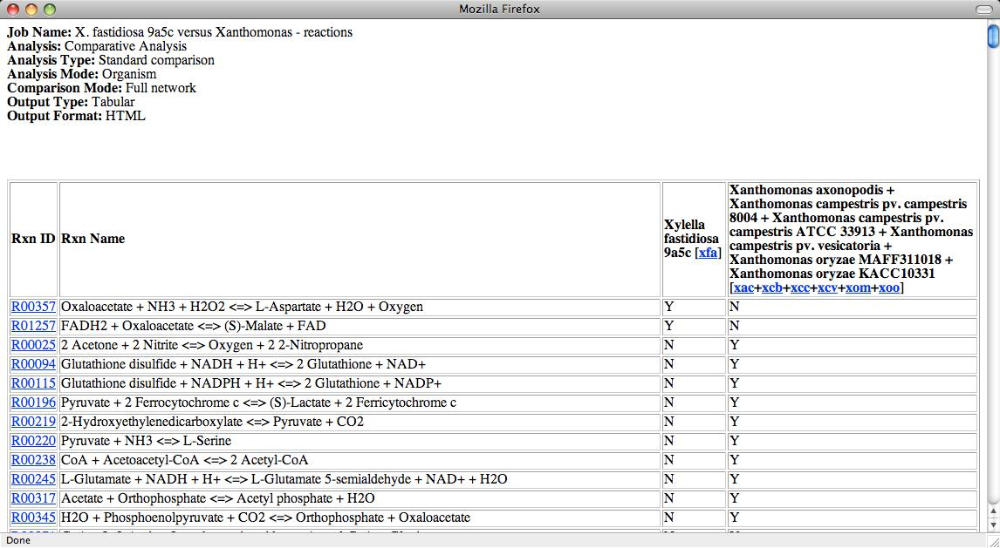

Rahnuma: Pathway Prediction and Network Analysis Tool
Tutorial ‒ Comparative Analysis 1
Task: To identify reactions present in Xylella fastidiosa 9a5c
that are absent from all Xanthomonas.
Steps: The steps required to submit the job are as follows.
Main Page
- Specify a job name, e.g. "X. fastidiosa 9a5c versus
Xanthomonas - reactions".
- Specify a valid email address to get an email notification once the job is
finished.
- Select "Comparative Analysis" as the analysis to be performed.
- Select "Standard Comparison" as the Analysis Type since we want to compare
an organism against a group of organisms instead of performing comparison
within a group of organisms.
- Select "Organism" as Analysis Mode as we want to perform analysis on
sets of organism rather than on a phylogeny.
- We would like to identify reactions that are different, i.e. compare the
networks without considering pathways between metabolites, so select
"Full Network" as Comparison Mode.
- Select the desired output type, tabulated or descriptive.
- Select the desired output format, text or HTML.
- Click "Next" to go to the parameters page.
A sample screenshot is shown below.

Parameters Page
- To select organism 1, click "Select".
- Scroll down the organism list to find the required organism, "Xylella
fastidiosa 9a5c" in this case.
- Similarly, select organisms for the second set. We would like to select
all Xanthomonas to form the second set so click the first
Xanthomonas species and then while holding the Shift key click on the last
Xanthomonas species.
- Since we want to identify reactions that are missing from all
Xanthomonas species, i.e. not present in any of the species, we need to
build a network that contains all reactions that are present in at least one
of the species. To do this, select "All Reactions" as the Mode.
Detailed explanation of the organism mode is presented
here.
- Click "Submit" to submit the job.
A sample screenshot of the parameters page is shown below.

Tip: You can click on [?] at anytime to go to the corresponding
section on the help page.
Output: A sample output is shown below.

- The header part of the result file shows the parameter values selected
while submitting the job.
- Results for comparative analysis are shown in a tabulated format
(Tabulated Output was selected as Output Type) with following columns.
- Reaction Id (from KEGG)
- Reaction Description
- Network 1
- Network 2
For descriptive output, the results are grouped according to their presence in
a network.
- For HTML output, as in this case, entries are hot-linked to
corresponding entries in KEGG.
Note: The interpretation of output for different combinations of organism
mode for comparative analysis can be found
here.
For further enquiries or comments/suggestions, please contact Aziz Mithani at
mithani [at] stats [dot] ox [dot] ac [dot] uk.
Return to the list of tutorials.